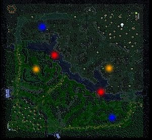

De: La Frikipedia, la enciclopedia extremadamente seria.
De: La Frikipedia, la enciclopedia extremadamente seria. De: La Frikipedia, la enciclopedia extremadamente seria.
| De la serie Países del planeta tierra: | |||||
| Sudá África | |||||
|---|---|---|---|---|---|
| |||||
| Lema: Y dale bo, la vuvuzela es mi obsesión | |||||
| Himno: Waka Waka Eh
| |||||
| 
| |||||
| Capital | Ciudad del Cabo de la Manzana | ||||
| Mayor ciudad | Jonathanburgués | ||||
| Lenguas oficiales | Vuvuzela | ||||
| Gobierno | Soccer City | ||||
| Führer | Nelson "Ha-ha" Mandela | ||||
| Área | | ||||
| Población | 1.000.000 de inmigrantes, varios holandeses y vuvuzelas vivientes. | ||||
| Moneda | Banderas Sudafricanas (1 Bandera equivale a 0.001 Lero) | ||||
| Zona horaria | GTM -7500 | ||||
| Dominio Internet | .vuvuzela | ||||
| Código telefónico | 0800 - VUVUZELA
| ||||
| Mandela es una vuvuzela negra | |||||
«¡Vaaaaaaaaaaaamo Lesothooooooooooo!»
~ Un lesothense declarandole la guerra a Sudáfrica
El Imperio Sudado de África es una playa país ubicado en el Medio Oriente, rodeado de montañas y su único límite es el Free Shop de Qatar. Actualmente está en guerra con un pequeño país ubicado arriba de un gran cementerio indio, llamado el culo te enchoto Lesotho. Sus provincias más importantes son la Ciudad de la Manzana, el Bronx y Prehistoria Pretoria, estas tres ampliamente separadas por canales rebosantes de mierda y de cuerpos de los esclavos mandados a matar por Mandela.
La población holandesa está conformada de diversas maneras. En algunos puntos podemos encontrar esporádicamente traficantes de negros italianos vendiendo sus pizzas con marihuana orégano, también sobre la costa podemos encontrar cuerpos cangrejos y tiburones, y finalmente en las inmediaciones del Soccer City se puede hallar personas del perdedor de la final Holanda pidiendo monedas explorando el país africano con sus bastardos hijos.
Sudoración cuenta con una vasta cantidad de yacimientos color caca marrón, sobre los que millones de años después se fueron edificando las cárceles, las bocas de droga comisarías, los edificios civiles y las fábricas de vuvuzelas.
Un día como tantos en la Edad Pretoria, los burgueses europeos llegaron con la noticia de que habían ofertas de 2x1 en esclavos, sin dudarlo saquearon cada uno de los edificios, llevándose a los esclavos, dándoles migas de pan como carnada y fumándose quemando todas las plantaciones de humo de estos cultivos hicieron enloquecer a los invasores, obligándolos a meterse palos de goma unos a otros en el medio del ojete, a entrar a la tumba de Mandela la Casa Negra Blanca matando a cada kebab viviente, y finalmente, a llevarse a los esclavos a la mitad de las aguas internacionales, tener sexo con ellos y tirarlos al río.
El Imperio Vuvuzela alcanzó finalmente la dependencia independencia en el año 2098, cuando, con los cuerpos de los caídos (y algunas plantas de éxtasis) levantaron murallas en las costas, y con el humo de la marihuana quemada, taparon los cielos, quedando así adentro de una burbuja que cada día se achica más y más.
Con una superficie de 1000vs² (Vuvuzelas cuadradas), Vuvuzelaville se encuentra en la última luna de Júpiter, llamada Titán, y que limita con Vietnam, Evotopía Bolivia, Puerto Rico y Hong Kong. Los océanos que la rodean son llamados El Océano Negro y El Océano Cooperativo Mandela y Co. El país es muy grande, por lo que abundan distintos tipos de climas robados de otros países, como el de Norgüey Noruega, UnAnal Senegal y del mismísimo Fiji. Tiene precipitaciones de hasta 2 metros y la mayoría de las veces Dios manda lluvias ácidas para purificar de una vez esta tierra olvidada (aunque los vuvuzelianos son más inteligentes y se visten con capas protectoras de color blanco).
Sudáfrica cuenta con más de 20.000 plantas diferentes, obteniendo el título de "País más drogo biodiverso de la territorio.
Pasando a hablar de la fauna, se puede destacar que la especie predominante es el sudafricano Hiputopopótamus Asesinus, que tiene como principal alimento al burgués europeo sudafricano. De más está decir que durante las noches, los pocos Pedobears osos que habitan en esta zona, salen de cacería a violarse y correrse comerse a los niños vagos que andan fumando y tambaleando cerca de los ríos. Se estima que durante el año 2009 hubo un incremento de un 200% de muertes de sudafricanos cerca de los ríos, y el 99% tenía restos de leche pegajosa y musgosa en la boca y genitales (el otro 1% se autovioló suicidó).
Terminado el Mundial de plata y luego traficar esconder los cuerpos.
Más del 78% de la población Bafana-Bafana sufre de distintos tipos de enfermedades, entre ellas están el VIH, la Malaria, el Dengue, el H1N1, la peste africana negra y demás variantes. El VIH es el que más impactó en el reino zulú y debido a eso las sanidades debieron redoblar y volcar sus esfuerzos en construir derribar las bocas de droga, construir "Orfanatos Sida" y llevar a los bebés huérfanos para ser atendidos por atrás.
Existe una diversidad de culturas esparcidas por el territorio blanco negro. Estas son las principales:
Sudáfrica tiene más de un número binario de lenguas, he aquí cada una de ellas:
Autor(es):